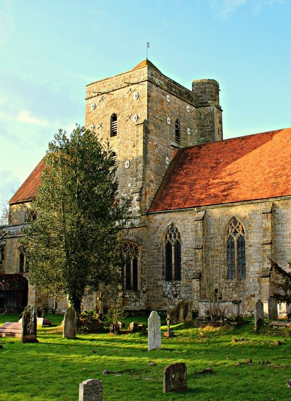

The Assumption & St Nicholas
Etchingham
Etchingham
The Assumption of the Blessed Virgin & St Nicholas
About us
Ours is a stunning Grade I listed church next to the railway in Etchingham. We're a friendly group, and we have the most cake per head in the benefice!
Services
We are a small but growing and dedicated congregation, offering parish communion and family communion.

Visiting
- Where
- Next to Etchingham station
- Parking
- There's limited parking at the front of the church, and the Bistro car park is also available.
- Toilets
- There's no toilet in church at the moment, but the Bistro at Etchingham station will let you use theirs when they're open.
Support our church
Regular giving through the Parish Giving Scheme helps us keep the church open and the work going.
Give now